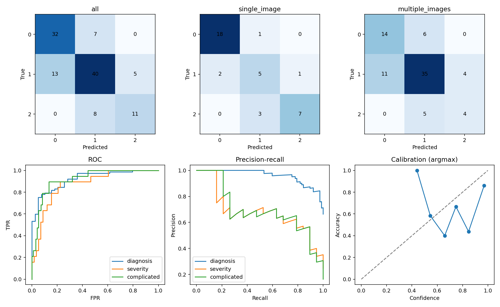

Patient-level evaluation of a separately trained model. Class accuracy = recall; OvR accuracy includes TN. Single/multiple groups use the original image count, including for the clinical model.
| mode | group | patients | accuracy | f1 | macro_f1 | precision | sensitivity | specificity | balanced_accuracy | weighted_f1 | mcc | cohen_kappa | auroc_macro_ovr | auprc_macro_average_precision | nll_three_classes | brier_three_classes | ece_top_label_argmax_10bins | argmax_accuracy | accuracy_wilson_95ci |
|---|---|---|---|---|---|---|---|---|---|---|---|---|---|---|---|---|---|---|---|
| clinical | all | 116 | 0.715517 | 0.699480 | 0.699480 | 0.708628 | 0.696372 | 0.840334 | 0.696372 | 0.713096 | 0.535334 | 0.533569 | 0.879013 | 0.787895 | 0.730640 | 0.418219 | 0.157074 | 0.715517 | [0.6275380247564369, 0.7896798603730292] |
| clinical | single_image | 37 | 0.810811 | 0.763030 | 0.763030 | 0.776852 | 0.757456 | 0.904640 | 0.757456 | 0.811409 | 0.693095 | 0.690562 | 0.905080 | 0.812873 | 0.600529 | 0.317531 | 0.126636 | 0.810811 | [0.6579530307016159, 0.9052002126968799] |
| clinical | multiple_images | 79 | 0.670886 | 0.607326 | 0.607326 | 0.606957 | 0.614815 | 0.792369 | 0.614815 | 0.672634 | 0.392908 | 0.390324 | 0.836167 | 0.682036 | 0.791579 | 0.465377 | 0.185619 | 0.670886 | [0.5614657669235915, 0.7644579961820298] |
| mode | group | class | class_index | support | predicted_support | tp | tn | fp | fn | precision | ppv | npv | sensitivity | specificity | f1 | fpr | fnr | balanced_accuracy | mcc | auroc | auprc_average_precision | recall | accuracy_within_class | one_vs_rest_accuracy | recall_wilson_95ci | wilson_95ci |
|---|---|---|---|---|---|---|---|---|---|---|---|---|---|---|---|---|---|---|---|---|---|---|---|---|---|---|
| clinical | all | no appendicitis | 0 | 39 | 45 | 32 | 64 | 13 | 7 | 0.711111 | 0.711111 | 0.901408 | 0.820513 | 0.831169 | 0.761905 | 0.168831 | 0.179487 | 0.825841 | 0.631797 | 0.920413 | 0.856611 | 0.820513 | 0.820513 | 0.827586 | [0.6733195433811838, 0.9102273452678089] | {'accuracy': [0.7486455959991707, 0.8855255893976177], 'sensitivity': [0.6733195433811838, 0.9102273452678089], 'specificity': [0.7322711067008882, 0.8985933129172399], 'ppv': [0.5663145942523844, 0.8226991751715074], 'npv': [0.8101927775940715, 0.9514171762760307]} |
| clinical | all | uncomplicated_appendicitis | 1 | 58 | 55 | 40 | 43 | 15 | 18 | 0.727273 | 0.727273 | 0.704918 | 0.689655 | 0.741379 | 0.707965 | 0.258621 | 0.310345 | 0.715517 | 0.431612 | 0.799643 | 0.804456 | 0.689655 | 0.689655 | 0.715517 | [0.561969355757183, 0.7937790437718091] | {'accuracy': [0.6275380247564369, 0.7896798603730292], 'sensitivity': [0.561969355757183, 0.7937790437718091], 'specificity': [0.6162261423525959, 0.8365445479570304], 'ppv': [0.5976780188832919, 0.8271924806089416], 'npv': [0.5811059794277964, 0.8044498124172395]} |
| clinical | all | complicated_appendicitis | 2 | 19 | 16 | 11 | 92 | 5 | 8 | 0.687500 | 0.687500 | 0.920000 | 0.578947 | 0.948454 | 0.628571 | 0.051546 | 0.421053 | 0.763700 | 0.566035 | 0.916983 | 0.702618 | 0.578947 | 0.578947 | 0.887931 | [0.36275903534255044, 0.7685810871754575] | {'accuracy': [0.8176656894377012, 0.9333265037953378], 'sensitivity': [0.36275903534255044, 0.7685810871754575], 'specificity': [0.8849564458853718, 0.9777839489624893], 'ppv': [0.44404355834740666, 0.8583535614521796], 'npv': [0.8500189229905127, 0.9589065385156194]} |
| clinical | single_image | no appendicitis | 0 | 19 | 20 | 18 | 16 | 2 | 1 | 0.900000 | 0.900000 | 0.941176 | 0.947368 | 0.888889 | 0.923077 | 0.111111 | 0.052632 | 0.918129 | 0.838713 | 0.956140 | 0.946200 | 0.947368 | 0.947368 | 0.918919 | [0.753612688331012, 0.9906480059376995] | {'accuracy': [0.7869932065071162, 0.9720394258995521], 'sensitivity': [0.753612688331012, 0.9906480059376995], 'specificity': [0.672002348698212, 0.9689804773543876], 'ppv': [0.6989663547715128, 0.9721335187862319], 'npv': [0.730179693624246, 0.9895395990150022]} |
| clinical | single_image | uncomplicated_appendicitis | 1 | 8 | 9 | 5 | 25 | 4 | 3 | 0.555556 | 0.555556 | 0.892857 | 0.625000 | 0.862069 | 0.588235 | 0.137931 | 0.375000 | 0.743534 | 0.467341 | 0.814655 | 0.616427 | 0.625000 | 0.625000 | 0.810811 | [0.3057423946026274, 0.8631557141764026] | {'accuracy': [0.6579530307016159, 0.9052002126968799], 'sensitivity': [0.3057423946026274, 0.8631557141764026], 'specificity': [0.6944100627964798, 0.9450256003588804], 'ppv': [0.26665129349549316, 0.8112214789023353], 'npv': [0.7280414845132785, 0.9628816331707]} |
| clinical | single_image | complicated_appendicitis | 2 | 10 | 8 | 7 | 26 | 1 | 3 | 0.875000 | 0.875000 | 0.896552 | 0.700000 | 0.962963 | 0.777778 | 0.037037 | 0.300000 | 0.831481 | 0.715199 | 0.944444 | 0.875992 | 0.700000 | 0.700000 | 0.891892 | [0.39677814746114537, 0.8922087325936989] | {'accuracy': [0.7529146845587398, 0.9571481005958853], 'sensitivity': [0.39677814746114537, 0.8922087325936989], 'specificity': [0.8171653406642416, 0.9934318540192151], 'ppv': [0.5291118177871466, 0.9775825085499432], 'npv': [0.736149189092262, 0.9641851086493229]} |
| clinical | multiple_images | no appendicitis | 0 | 20 | 25 | 14 | 48 | 11 | 6 | 0.560000 | 0.560000 | 0.888889 | 0.700000 | 0.813559 | 0.622222 | 0.186441 | 0.300000 | 0.756780 | 0.480137 | 0.874576 | 0.731696 | 0.700000 | 0.700000 | 0.784810 | [0.4810271816464765, 0.8545227551323956] | {'accuracy': [0.682128319163289, 0.8610779526794132], 'sensitivity': [0.4810271816464765, 0.8545227551323956], 'specificity': [0.6962104955303725, 0.8925727805799468], 'ppv': [0.3706733186979878, 0.7333436111893266], 'npv': [0.7780529897881872, 0.9480697750300044]} |
| clinical | multiple_images | uncomplicated_appendicitis | 1 | 50 | 46 | 35 | 18 | 11 | 15 | 0.760870 | 0.760870 | 0.545455 | 0.700000 | 0.620690 | 0.729167 | 0.379310 | 0.300000 | 0.660345 | 0.313425 | 0.743448 | 0.849241 | 0.700000 | 0.700000 | 0.670886 | [0.562496495355466, 0.8089644649911906] | {'accuracy': [0.5614657669235915, 0.7644579961820298], 'sensitivity': [0.562496495355466, 0.8089644649911906], 'specificity': [0.44002544205988525, 0.7731197789919015], 'ppv': [0.6206486144237799, 0.8608782222272218], 'npv': [0.3798593853621746, 0.7015706148612388]} |
| clinical | multiple_images | complicated_appendicitis | 2 | 9 | 8 | 4 | 66 | 4 | 5 | 0.500000 | 0.500000 | 0.929577 | 0.444444 | 0.942857 | 0.470588 | 0.057143 | 0.555556 | 0.693651 | 0.407892 | 0.890476 | 0.465171 | 0.444444 | 0.444444 | 0.886076 | [0.18877852109766463, 0.7333487065045068] | {'accuracy': [0.7974520728901779, 0.9388942067188184], 'sensitivity': [0.18877852109766463, 0.7333487065045068], 'specificity': [0.8620804952516177, 0.9775562208992887], 'ppv': [0.21521606221387762, 0.7847839377861223], 'npv': [0.8455098688621009, 0.969546397560289]} |
| mode | group | task | status | patients | support_positive | support_negative | tp | tn | fp | fn | accuracy | precision | ppv | npv | sensitivity | recall | specificity | f1 | negative_class_precision | negative_class_recall | negative_class_f1 | macro_f1 | weighted_f1 | fpr | fnr | balanced_accuracy | mcc | auroc | auprc_average_precision | brier | log_loss | confusion_matrix | confusion_matrix_order | wilson_95ci | positive_class | negative_class | decision_rule | ranking_score |
|---|---|---|---|---|---|---|---|---|---|---|---|---|---|---|---|---|---|---|---|---|---|---|---|---|---|---|---|---|---|---|---|---|---|---|---|---|---|---|
| clinical | all | diagnosis | ok | 116 | 77 | 39 | 64 | 32 | 7 | 13 | 0.827586 | 0.901408 | 0.901408 | 0.711111 | 0.831169 | 0.831169 | 0.820513 | 0.864865 | 0.711111 | 0.820513 | 0.761905 | 0.813385 | 0.830249 | 0.179487 | 0.168831 | 0.825841 | 0.631797 | 0.920413 | 0.960421 | 0.120926 | 0.386236 | [[32, 7], [13, 64]] | [negative, positive] | {'accuracy': [0.7486455959991707, 0.8855255893976177], 'sensitivity': [0.7322711067008882, 0.8985933129172399], 'specificity': [0.6733195433811838, 0.9102273452678089], 'ppv': [0.8101927775940715, 0.9514171762760307], 'npv': [0.5663145942523844, 0.8226991751715074]} | appendicitis | no appendicitis | NaN | NaN |
| clinical | all | severity_direct_true_appendicitis | ok | 77 | 19 | 58 | 11 | 53 | 5 | 8 | 0.831169 | 0.687500 | 0.687500 | 0.868852 | 0.578947 | 0.578947 | 0.913793 | 0.628571 | 0.868852 | 0.913793 | 0.890756 | 0.759664 | 0.826061 | 0.086207 | 0.421053 | 0.746370 | 0.523581 | 0.870236 | 0.690591 | 0.134895 | 0.518843 | [[53, 5], [8, 11]] | [negative, positive] | {'accuracy': [0.7322711067008882, 0.8985933129172399], 'sensitivity': [0.36275903534255044, 0.7685810871754575], 'specificity': [0.8135637093712648, 0.9626146168738089], 'ppv': [0.44404355834740666, 0.8583535614521796], 'npv': [0.7619811980700654, 0.932019227250999]} | complicated | uncomplicated | NaN | NaN |
| clinical | all | severity_after_gating_true_appendicitis | ok | 77 | 19 | 58 | 11 | 53 | 5 | 8 | 0.831169 | 0.687500 | 0.687500 | 0.868852 | 0.578947 | 0.578947 | 0.913793 | 0.628571 | 0.868852 | 0.913793 | 0.890756 | 0.759664 | 0.826061 | 0.086207 | 0.421053 | 0.746370 | 0.523581 | 0.876588 | 0.709983 | 0.132589 | 0.501263 | [[53, 5], [8, 11]] | [negative, positive] | {'accuracy': [0.7322711067008882, 0.8985933129172399], 'sensitivity': [0.36275903534255044, 0.7685810871754575], 'specificity': [0.8135637093712648, 0.9626146168738089], 'ppv': [0.44404355834740666, 0.8583535614521796], 'npv': [0.7619811980700654, 0.932019227250999]} | complicated | uncomplicated | p >= 0.5 AND q >= 0.5 | p*q; decision is not threshold(p*q) |
| clinical | all | complicated_end_to_end_all_patients | ok | 116 | 19 | 97 | 11 | 92 | 5 | 8 | 0.887931 | 0.687500 | 0.687500 | 0.920000 | 0.578947 | 0.578947 | 0.948454 | 0.628571 | 0.920000 | 0.948454 | 0.934010 | 0.781291 | 0.883981 | 0.051546 | 0.421053 | 0.763700 | 0.566035 | 0.916983 | 0.702618 | 0.088175 | 0.334570 | [[92, 5], [8, 11]] | [negative, positive] | {'accuracy': [0.8176656894377012, 0.9333265037953378], 'sensitivity': [0.36275903534255044, 0.7685810871754575], 'specificity': [0.8849564458853718, 0.9777839489624893], 'ppv': [0.44404355834740666, 0.8583535614521796], 'npv': [0.8500189229905127, 0.9589065385156194]} | complicated | no or uncomplicated | p >= 0.5 AND q >= 0.5 | p*q; decision is not threshold(p*q) |
| clinical | single_image | diagnosis | ok | 37 | 18 | 19 | 16 | 18 | 1 | 2 | 0.918919 | 0.941176 | 0.941176 | 0.900000 | 0.888889 | 0.888889 | 0.947368 | 0.914286 | 0.900000 | 0.947368 | 0.923077 | 0.918681 | 0.918800 | 0.052632 | 0.111111 | 0.918129 | 0.838713 | 0.956140 | 0.969444 | 0.069502 | 0.241850 | [[18, 1], [2, 16]] | [negative, positive] | {'accuracy': [0.7869932065071162, 0.9720394258995521], 'sensitivity': [0.672002348698212, 0.9689804773543876], 'specificity': [0.753612688331012, 0.9906480059376995], 'ppv': [0.730179693624246, 0.9895395990150022], 'npv': [0.6989663547715128, 0.9721335187862319]} | appendicitis | no appendicitis | NaN | NaN |
| clinical | single_image | severity_direct_true_appendicitis | ok | 18 | 10 | 8 | 7 | 7 | 1 | 3 | 0.777778 | 0.875000 | 0.875000 | 0.700000 | 0.700000 | 0.700000 | 0.875000 | 0.777778 | 0.700000 | 0.875000 | 0.777778 | 0.777778 | 0.777778 | 0.125000 | 0.300000 | 0.787500 | 0.575000 | 0.850000 | 0.889755 | 0.187312 | 0.737285 | [[7, 1], [3, 7]] | [negative, positive] | {'accuracy': [0.5478541568378738, 0.909990718913983], 'sensitivity': [0.39677814746114537, 0.8922087325936989], 'specificity': [0.5291118177871466, 0.9775825085499432], 'ppv': [0.5291118177871466, 0.9775825085499432], 'npv': [0.39677814746114537, 0.8922087325936989]} | complicated | uncomplicated | NaN | NaN |
| clinical | single_image | severity_after_gating_true_appendicitis | ok | 18 | 10 | 8 | 7 | 7 | 1 | 3 | 0.777778 | 0.875000 | 0.875000 | 0.700000 | 0.700000 | 0.700000 | 0.875000 | 0.777778 | 0.700000 | 0.875000 | 0.777778 | 0.777778 | 0.777778 | 0.125000 | 0.300000 | 0.787500 | 0.575000 | 0.850000 | 0.889755 | 0.189874 | 0.734105 | [[7, 1], [3, 7]] | [negative, positive] | {'accuracy': [0.5478541568378738, 0.909990718913983], 'sensitivity': [0.39677814746114537, 0.8922087325936989], 'specificity': [0.5291118177871466, 0.9775825085499432], 'ppv': [0.5291118177871466, 0.9775825085499432], 'npv': [0.39677814746114537, 0.8922087325936989]} | complicated | uncomplicated | p >= 0.5 AND q >= 0.5 | p*q; decision is not threshold(p*q) |
| clinical | single_image | complicated_end_to_end_all_patients | ok | 37 | 10 | 27 | 7 | 26 | 1 | 3 | 0.891892 | 0.875000 | 0.875000 | 0.896552 | 0.700000 | 0.700000 | 0.962963 | 0.777778 | 0.896552 | 0.962963 | 0.928571 | 0.853175 | 0.887816 | 0.037037 | 0.300000 | 0.831481 | 0.715199 | 0.944444 | 0.875992 | 0.092834 | 0.361126 | [[26, 1], [3, 7]] | [negative, positive] | {'accuracy': [0.7529146845587398, 0.9571481005958853], 'sensitivity': [0.39677814746114537, 0.8922087325936989], 'specificity': [0.8171653406642416, 0.9934318540192151], 'ppv': [0.5291118177871466, 0.9775825085499432], 'npv': [0.736149189092262, 0.9641851086493229]} | complicated | no or uncomplicated | p >= 0.5 AND q >= 0.5 | p*q; decision is not threshold(p*q) |
| clinical | multiple_images | diagnosis | ok | 79 | 59 | 20 | 48 | 14 | 6 | 11 | 0.784810 | 0.888889 | 0.888889 | 0.560000 | 0.813559 | 0.813559 | 0.700000 | 0.849558 | 0.560000 | 0.700000 | 0.622222 | 0.735890 | 0.792004 | 0.300000 | 0.186441 | 0.756780 | 0.480137 | 0.874576 | 0.956018 | 0.145010 | 0.453860 | [[14, 6], [11, 48]] | [negative, positive] | {'accuracy': [0.682128319163289, 0.8610779526794132], 'sensitivity': [0.6962104955303725, 0.8925727805799468], 'specificity': [0.4810271816464765, 0.8545227551323956], 'ppv': [0.7780529897881872, 0.9480697750300044], 'npv': [0.3706733186979878, 0.7333436111893266]} | appendicitis | no appendicitis | NaN | NaN |
| clinical | multiple_images | severity_direct_true_appendicitis | ok | 59 | 9 | 50 | 4 | 46 | 4 | 5 | 0.847458 | 0.500000 | 0.500000 | 0.901961 | 0.444444 | 0.444444 | 0.920000 | 0.470588 | 0.901961 | 0.920000 | 0.910891 | 0.690740 | 0.843726 | 0.080000 | 0.555556 | 0.682222 | 0.382743 | 0.846667 | 0.459120 | 0.118903 | 0.452200 | [[46, 4], [5, 4]] | [negative, positive] | {'accuracy': [0.7348201621622644, 0.9176153600140352], 'sensitivity': [0.18877852109766463, 0.7333487065045068], 'specificity': [0.8116175308165717, 0.968450485911407], 'ppv': [0.21521606221387762, 0.7847839377861223], 'npv': [0.7902176531891913, 0.9573919268923814]} | complicated | uncomplicated | NaN | NaN |
| clinical | multiple_images | severity_after_gating_true_appendicitis | ok | 59 | 9 | 50 | 4 | 46 | 4 | 5 | 0.847458 | 0.500000 | 0.500000 | 0.901961 | 0.444444 | 0.444444 | 0.920000 | 0.470588 | 0.901961 | 0.920000 | 0.910891 | 0.690740 | 0.843726 | 0.080000 | 0.555556 | 0.682222 | 0.382743 | 0.855556 | 0.467949 | 0.115112 | 0.430226 | [[46, 4], [5, 4]] | [negative, positive] | {'accuracy': [0.7348201621622644, 0.9176153600140352], 'sensitivity': [0.18877852109766463, 0.7333487065045068], 'specificity': [0.8116175308165717, 0.968450485911407], 'ppv': [0.21521606221387762, 0.7847839377861223], 'npv': [0.7902176531891913, 0.9573919268923814]} | complicated | uncomplicated | p >= 0.5 AND q >= 0.5 | p*q; decision is not threshold(p*q) |
| clinical | multiple_images | complicated_end_to_end_all_patients | ok | 79 | 9 | 70 | 4 | 66 | 4 | 5 | 0.886076 | 0.500000 | 0.500000 | 0.929577 | 0.444444 | 0.444444 | 0.942857 | 0.470588 | 0.929577 | 0.942857 | 0.936170 | 0.703379 | 0.883129 | 0.057143 | 0.555556 | 0.693651 | 0.407892 | 0.890476 | 0.465171 | 0.085992 | 0.322132 | [[66, 4], [5, 4]] | [negative, positive] | {'accuracy': [0.7974520728901779, 0.9388942067188184], 'sensitivity': [0.18877852109766463, 0.7333487065045068], 'specificity': [0.8620804952516177, 0.9775562208992887], 'ppv': [0.21521606221387762, 0.7847839377861223], 'npv': [0.8455098688621009, 0.969546397560289]} | complicated | no or uncomplicated | p >= 0.5 AND q >= 0.5 | p*q; decision is not threshold(p*q) |
| mode | group | metric | lower | upper | valid_resamples |
|---|---|---|---|---|---|
| clinical | all | accuracy | 0.629310 | 0.793103 | 1000 |
| clinical | all | macro_f1 | 0.601773 | 0.786998 | 1000 |
| clinical | all | auroc_macro_ovr | 0.826906 | 0.923288 | 1000 |
| clinical | all | diagnosis_auroc | 0.866134 | 0.961056 | 1000 |
| clinical | all | severity_direct_auroc | 0.774955 | 0.951906 | 1000 |
| clinical | all | complicated_end_to_end_auroc | 0.850217 | 0.969683 | 1000 |
| clinical | all | complicated_recall | 0.315789 | 0.789474 | 1000 |
| clinical | single_image | accuracy | 0.702027 | 0.918919 | 1000 |
| clinical | single_image | macro_f1 | 0.603769 | 0.901322 | 1000 |
| clinical | single_image | auroc_macro_ovr | 0.808441 | 0.978970 | 1000 |
| clinical | single_image | diagnosis_auroc | 0.877120 | 1.000000 | 1000 |
| clinical | single_image | severity_direct_auroc | 0.637500 | 1.000000 | 1000 |
| clinical | single_image | complicated_end_to_end_auroc | 0.862963 | 1.000000 | 1000 |
| clinical | single_image | complicated_recall | 0.400000 | 1.000000 | 1000 |
| clinical | multiple_images | accuracy | 0.556962 | 0.772152 | 1000 |
| clinical | multiple_images | macro_f1 | 0.477186 | 0.732510 | 1000 |
| clinical | multiple_images | auroc_macro_ovr | 0.760936 | 0.904474 | 1000 |
| clinical | multiple_images | diagnosis_auroc | 0.790678 | 0.946610 | 1000 |
| clinical | multiple_images | severity_direct_auroc | 0.713222 | 0.951111 | 1000 |
| clinical | multiple_images | complicated_end_to_end_auroc | 0.787302 | 0.968254 | 1000 |
| clinical | multiple_images | complicated_recall | 0.111111 | 0.777778 | 1000 |
